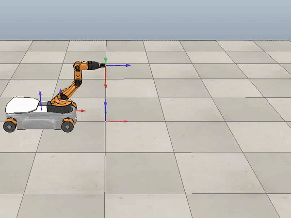
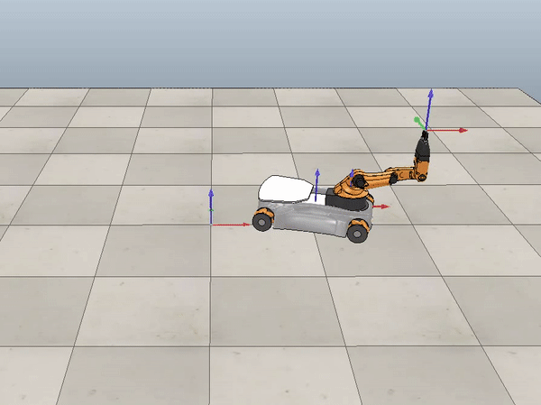

To understand the general flow of how the kinematics were calculated to move the robot, check out my Readme.
Three different cases were analyzed and are shown below. For more info about what each case was and what their corresponding error plots look like, see my Readme.